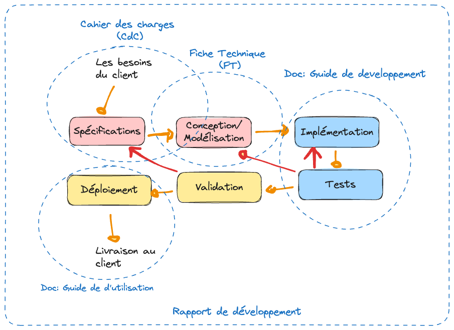
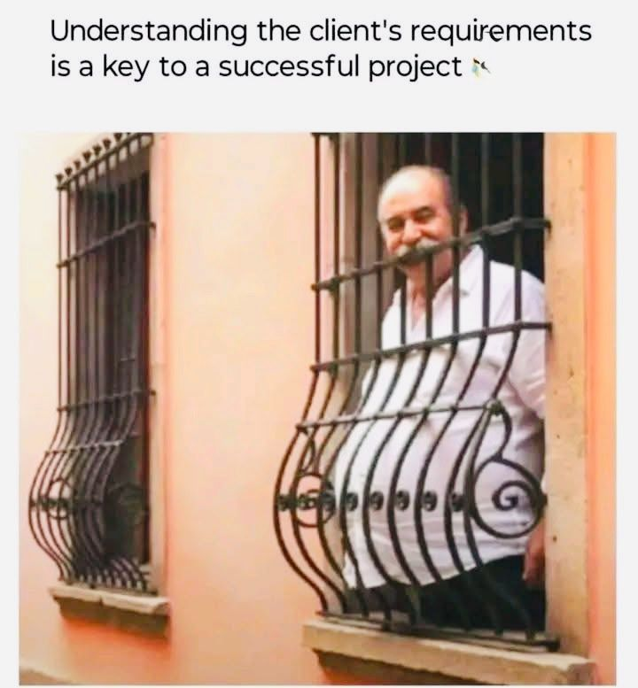
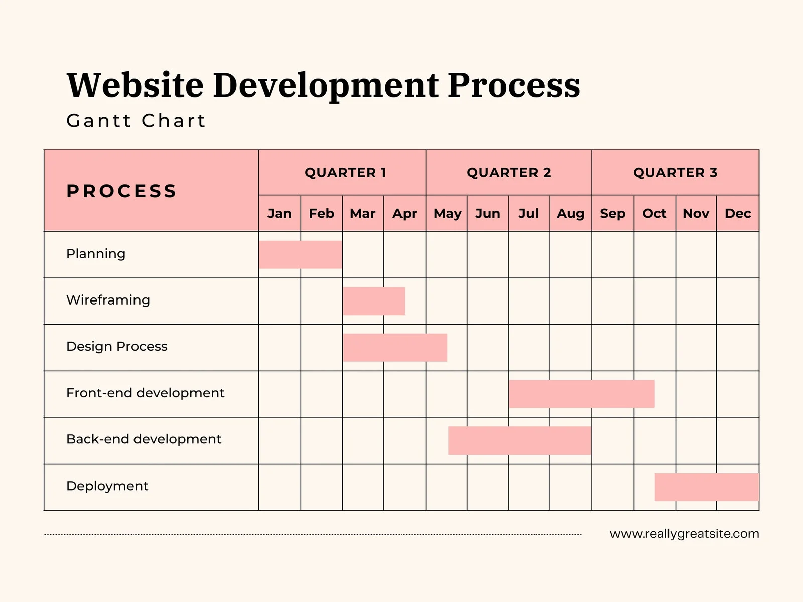

Chapitre 3 : La documentation nécessaire
Un développement de logiciel s’accompagne de plusieurs documents. Chacun a un rôle précis et un destinataire différent (client, équipe de développement, utilisateur final).
Objectifs
À la fin de ce chapitre, vous devez pouvoir :
Citer les documents qui accompagnent un développement et leur rôle
Rédiger la structure d’un cahier des charges (CDC)
Rédiger une fiche technique (FT) permettant de réaliser le logiciel
Distinguer clairement le rôle du CDC (avec le client) de celui de la FT (pour l’équipe)
Les documents du logiciel
Document |
Rôle |
|---|---|
Cahier des charges (CDC) |
Clarifie les besoins du client ; constitue le contrat réel qui lie le développeur au client. |
Fiche technique (FT) |
Contient l’ensemble des éléments de modélisation traduisant les spécifications en un modèle de développement viable (souvent en UML, Merise). |
Guide de développement |
Reprend les choix techniques : comment chaque module est testé, comment le code est structuré, le déploiement, … |
Guide d’utilisation |
L’installation et l’utilisation : détaille les fonctionnalités à l’utilisateur, étape par étape. |
{kind=link}

La documentation autour du développement d’un logiciel.
Note
Le rapport de développement est souvent une synthèse de tous les documents du logiciel.
1. Le cahier des charges (CDC)
Le CDC est le document qui permet de clarifier les besoins du client et de définir clairement les spécifications du problème, sur lesquelles on s’entendra avec lui.
Du besoin au CDC
Besoin du client → Analyse + poser des questions + consulter les archives + réunions de (re)cadrage → Cahier des charges.
{kind=link}

Bien comprendre le besoin réel du client est le point de départ.
1.1. Les parties du CDC (le cœur)
Objectif du projet — définir clairement le projet : un titre, le contexte, les constats, une justification.
Spécifications — fonctionnelles (les fonctionnalités du système, avec exemples) et non fonctionnelles (sécurité, convivialité, ergonomie, …).
Warning
On peut mettre un petit diagramme de cas d’utilisation, mais ce n’est pas forcément recommandé : c’est souvent trop technique pour le client.
Contraintes
côté client : payer, mettre à disposition une salle, un serveur, les employés pour les enquêtes, … ;
côté prestataire : réaliser un logiciel qui répond aux besoins (avec la qualité attendue), finir à temps, livrer le produit.
Livrables — les énumérer clairement (avec un descriptif si nécessaire) ; cette partie peut servir de base au bon de livraison : préciser les droits cédés, le code, les documents, les rapports, …
Chronogramme — le délai de réalisation, avec date de début et de fin, accompagné d’un calendrier de réalisation (un diagramme de Gantt).

Un chronogramme de réalisation, sous forme de diagramme de Gantt.
Signature.
(optionnel) Maquettes — un ou deux mock-ups du logiciel, qui permettent aussi de discuter de la charte graphique.
(optionnel) Budget / offre financière :
ne jamais donner juste un montant : répartir l’offre en plusieurs modules, avec parfois des alternatives ;
si besoin, produire un document d’accompagnement (Excel) détaillant l’offre — le diable est dans le détail.
{kind=link}
2. La fiche technique (FT)
La fiche technique reprend la modélisation du projet sous deux aspects : l’architecture générale et la conception détaillée.
Règle d’or
Une fiche technique DOIT permettre la réalisation complète du logiciel sans que le développeur ait besoin de recontacter le client ou de consulter le cahier des charges.
Elle contient typiquement :
L’architecture générale de développement : MVC, design patterns, paradigme, API et interactions, REST, …
Les diagrammes UML, au minimum :
Cas d’utilisation (pour les fonctionnalités) ;
Classe (pour la gestion des données) ;
Objet (pour exemplifier les classes et méthodes) ;
Séquence (et/ou diagrammes d’état-transition) — au minimum un par cas d’utilisation.
Les spécifications et choix logiciels.
Les maquettes — au minimum une par cas d’utilisation.
La gestion des données et du contenu.
Exercices
Note
Ces exercices préparent directement le TP1 (CDC) et le TP2 (fiche technique) — voir la Partie 3.
Pour le préliminaire (« logiciel de vente de produits avec recommandation »), rédigez l’objectif du projet et trois spécifications fonctionnelles + trois non fonctionnelles.
Proposez un chronogramme (Gantt) simplifié pour ce même projet.
Pour une fonctionnalité de votre choix, esquissez un diagramme de cas d’utilisation et un diagramme de séquence.
En quoi le cahier des charges et la fiche technique diffèrent-ils par leur destinataire et leur objectif ?